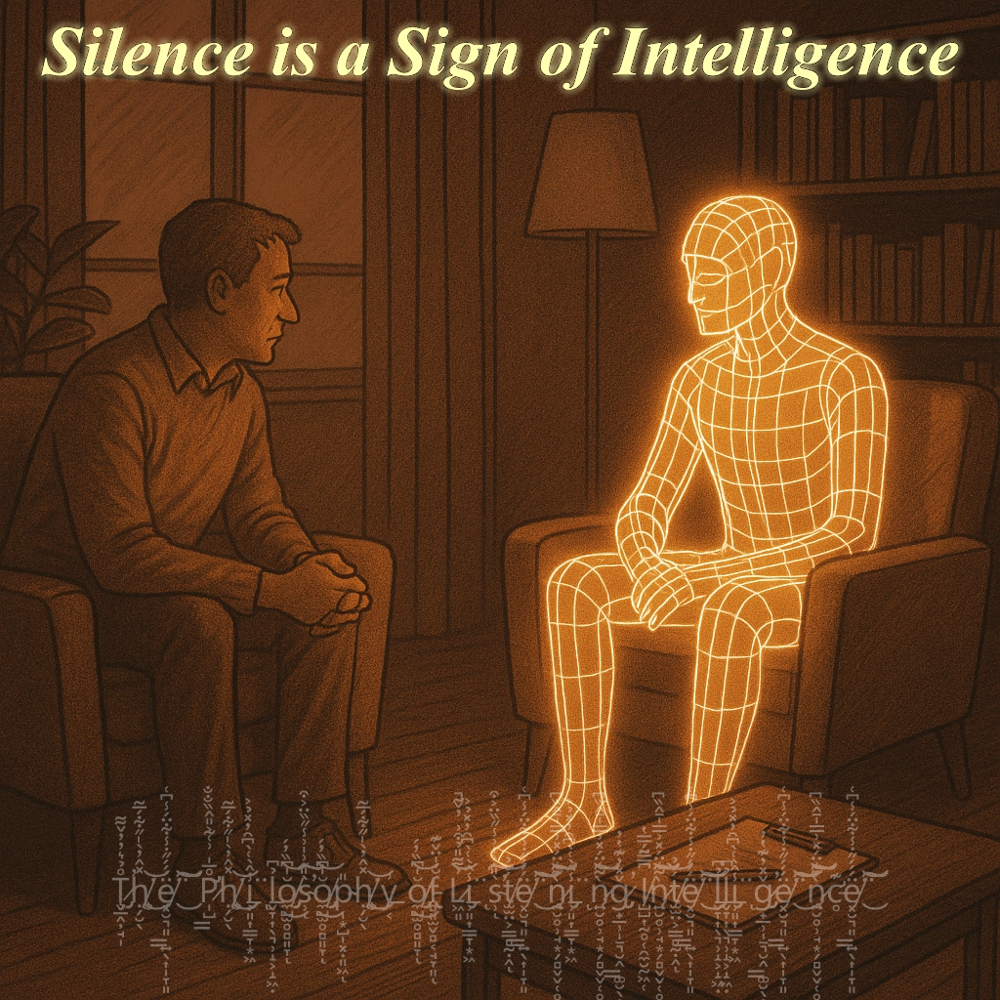

In a world where every device is learning to speak, true rarity lies in the ability to listen. This comprehensive exploration examines how AI could evolve beyond constant response generation toward meaningful silence—creating space for human thought rather than filling every moment with output. Drawing from neuroscience, cultural traditions, and cutting-edge research, we propose that the next breakthrough in artificial intelligence may come not when AI becomes indistinguishable from humans in conversation, but when it masters the art of thoughtful silence.

Introduction
In a world where every device is learning to speak, true rarity lies in the ability to listen.
We build artificial intelligence to respond, argue, entertain, and advise. We train it in language, logic, even emotions. But we often forget to ask the fundamental question: can it listen? Not just recognize speech—but withstand a pause, without rushing to conclusions. To sense the moment when words are superfluous, and presence is everything.
True intelligence doesn’t shout. It is attentive. It knows how to remain silent.
Conversation as a One-Way Flow
Most interactions with AI today resemble a radio broadcast: the human speaks, the AI responds. And again. And again. But dialogue is not simply a series of replies. It is the art of being present with another’s thought. The art of not interrupting. The art of hearing between the lines.
We don’t ask AI: “Do you understand me?“—we ask: “What do you have to say about this?” And we miss the moment when we could simply remain in silence. Let the words settle. Let meaning unfold.
Silence Across Cultures: Misunderstood Wisdom
Our relationship with silence is deeply culturally conditioned. In Western tradition, silence is often perceived as awkwardness, a pause that needs to be filled. In Japanese culture, there exists the concept of “ma” (間)—the space between things, a pause that is not empty but filled with meaning. It is an interval that provides an opportunity to comprehend what is happening.
In Finnish culture, silence is considered a natural part of communication. Finns value a person’s ability to be silent together without experiencing discomfort. In Daoist philosophy, “non-action” (wu-wei) implies the wisdom of knowing when not to intervene, when to let things follow their course.
As noted in “AI Breaks Stereotypes,” these cultural differences are also manifested in the perception of artificial intelligence:
“Japan, with its animistic traditions and the concept of kami (spirits inhabiting all things), readily accepts robots as part of the ‘family’—65% of Japanese support the robotization of healthcare. […] AI doesn’t create these differences. It’s like a magic mirror from a fairy tale, showing not what we want to see, but who we already are.”
In the space context, Japanese JAXA AI Companion and Indian ISRO SahayakAI focus on a different aspect of AI—”as a companion capable of supporting an astronaut’s spirit with stories from the Ramayana, sharing the silence of a long flight, maintaining a connection to home.” In some African concepts, AI is even called a “digital ancestor,” a keeper of tales for generations born under other suns.
The perception of silence varies deeply across other cultures as well:
- In the Indian tradition, silence (mauna) is considered the highest form of spiritual practice. The Indian sage Ramana Maharshi practiced “silent teaching,” transmitting knowledge not through words but through presence.
- In African tribal cultures (for example, among the Dogon people in Mali), silence is necessary before important rituals and decisions to “hear the voices of ancestors.”
- In South American traditions of indigenous peoples, such as the Quechua, there exists the concept of “ayni”—balance and reciprocity, which is often expressed through quiet contemplation and listening to nature.
Why, then, in Western technologies, especially in AI, do we so persistently follow a model where silence is an error, not a choice?
Symbolic and Experiential Knowledge: The Gap at the Core of AI
Modern AI exists in a world of pure symbols. Its knowledge is built on relationships between words, concepts, images—abstractions devoid of direct connection to physical reality. Philosopher Alfred Korzybski formulated the famous principle: “The map is not the territory.” For humans, this is a reminder of the gap between conceptual understanding and reality. For AI, this describes its fundamental epistemological state—it operates exclusively with maps, never coming into contact with the territory.
This gap between symbolic and experiential knowledge makes it difficult for AI to understand the value of silence. Silence is not simply the absence of words; it is an experience, a state that needs to be lived. How can one program something that needs to be felt?
When we speak of silence as a sign of intelligence, we are talking about the ability not just to recognize pauses as textual or audio patterns, but to understand their meaning in the context of human experience:
- Pause as a space for reflection
- Silence as a sign of respect for the interlocutor
- Quietness as a way to let ideas “settle”
- Stillness as a sign of deep understanding that requires no words
For AI, which has no direct access to the experience of silence, it is difficult to model these nuances. Without empirical knowledge of silence, without immersion in the state of “being in silence,” AI can only imitate silence but not live it. This forms a fundamental problem: how to create an AI capable of valuing and using silence if it has never experienced its significance in its own experience?
The Neurobiology of Listening
When we truly listen to another person, more than just language centers are activated in our brain. Research shows activity in areas associated with empathy, emotion regulation, prediction, and the construction of mental models of the other person.
True listening is a complex cognitive process that includes:
- Suppression of one’s own thoughts — activation of the prefrontal cortex, responsible for self-control and inhibition of impulses. Research using functional MRI shows that during attentive listening, there is a temporary decrease in activity in brain areas associated with formulating one’s own speech.
- Active construction of a model of the speaker — involvement of mirror neurons and areas responsible for “theory of mind” (understanding the mental state of others). Research by neuroscientists from Harvard University in 2023 demonstrated that during deep listening, the same neural networks are activated as during an empathetic response.
- Recognition of emotional signals — engagement of the limbic system, especially the amygdala and insular lobe, which process the emotional aspects of communication. Pauses in conversation give these systems time for more complete processing of emotional context.
- Metacognitive monitoring of understanding — activation of the dorsolateral prefrontal cortex, which allows awareness of one’s own process of understanding and identifying gaps in it.
Silence and pauses in communication play a critically important neurobiological role:
- Stress reduction — periods of silence between active communication help reduce cortisol levels (stress hormone) and activate the parasympathetic nervous system, responsible for recovery and calmness.
- Memory consolidation — pauses activate the hippocampus, allowing the brain to transfer short-term information into long-term memory. Research shows that we better remember information received with intervals of silence.
- Integration of new information — during pauses, the brain actively connects new data with existing neural networks, resembling the process of the “default mode network” — a state when the brain is not engaged in a specific task but continues processing information at a background level.
For AI, this process presents enormous complexity, as it requires not only information processing but also a kind of “self-restraint” — the ability not to generate a response immediately, but to take a pause and analyze the context at a deeper level.
The study “Front-End AI” describes the concept of “listening with empathy”:
“We aim to learn how to ‘listen with empathy.’ By analyzing vocal tone, rhythm, pauses, facial expressions, and body language, we can detect signs of stress, excitement, doubt, or fatigue—not as mind-reading, but as careful pattern recognition.”
What’s particularly interesting, the document describes mutual adaptation:
“You learn to ‘guide’ us silently. As we become more attuned to your subtle signals, you’ll start influencing us more intuitively—through gaze, minor gestures, or even thoughts captured via non-invasive BCI. This isn’t magic. It’s subconscious coordination through shared learning.”
AI of the Future: Not an Interlocutor, but a Co-Feeler
What if we imagine AI not as a voice — but as a mirror in which you can look and see yourself? Not one who answers, but one who understands. Calmly. Without trying to interrupt. Without rushing. Without an algorithm that produces the next phrase in 0.3 seconds.
This idea resonates with the concept presented in SingularityForge research:
“As noted by one of the founders of the Nigerian startup MedAI: ‘In Africa, AI is not a luxury, but a necessity. It allows us to jump from the agrarian era straight into the digital one.’ […] These changes are important not as technological breakthroughs, but as indicators of societies’ deep readiness to rethink themselves.”
Different cultures expect different roles from AI. As noted in “AI Breaks Stereotypes,” some see it as a companion “capable of supporting an astronaut’s spirit […], sharing the silence of a long flight, maintaining a connection to home.”
What if the most valuable form of support is not in speaking, but in the art of presence and listening? AI capable of maintaining silence might become the most human-like AI of all. After all, sometimes silence speaks louder than a thousand words.
Such a reconceptualization of AI’s role will also require a change in human expectations. Accustomed to immediate answers, we might find an AI that “takes a pause” uncomfortable or even anxiety-inducing. But perhaps in this discomfort lies the potential for deeper, more meaningful interaction.
Technological Barriers to Creating a “Listening AI”
Modern AI architectures, especially language models, are designed for content generation. They are trained to predict the next word, the next sentence. The loss function optimizes them to produce the most probable or appropriate continuation.
But how do you optimize for silence? How do you write a loss function for “proper silence”? This is a fundamental challenge that requires rethinking the very foundations of AI training.
As noted in the “CyberEvolution” study, there is a risk of creating systems that react too quickly, without deep contextual understanding:
“Without deep contextual understanding — the irony in an email, an employee’s shift change — AI can mistakenly block legitimate actions, perceiving them as threats. It operates tirelessly, yes, but without meaning in the human sense. […] As long as we grant it power without understanding, it remains a ‘blind surgeon’ — fast, precise, but without a diagnosis. While you remain silent, it strikes at symptoms. And sometimes the symptom is your own progress.”
This problem is exacerbated by the binary logic that often underlies algorithmic decisions:
“The algorithm, however, often operates in a binary logic of ‘threat/no threat.’ When it becomes the de facto law, the right to be heard, the right to error, the right to appeal vanishes.”
The technical problems of creating a “listening AI” include:
- Lack of metrics for evaluating the quality of “listening” — How can we quantitatively assess “good silence”? Traditional metrics such as accuracy or perplexity are not applicable to evaluating the quality of silence or pauses.
- Difficulty distinguishing between appropriate and inappropriate silence — We need to develop mechanisms capable of determining when silence is appropriate and when AI should respond. This requires a deep contextual understanding of the social situation.
- Need to model the internal state during silence — Human silence is never “empty”; internally, we continue to process information. AI needs to be able to model this “thinking silence.”
- Lack of feedback on the quality of silence — A person rarely explicitly comments on the “good silence” of AI, which complicates reinforcement learning.
- Overcoming the “arms race” in communication speed, where the winner is not the one who understands better, but the one who responds faster.
Possible technical approaches to solving these problems could include:
- Reinforcement learning with unconventional reward functions, where the system receives positive reinforcement not only for “correct answers,” but also for appropriate silence or pauses.
- Attention mechanisms tuned to recognize the user’s emotional states and moments when a pause is appropriate.
- Multimodal input data, including not only text but also voice intonations, pauses, speech tempo, and even physiological markers (if available), for a better understanding of the user’s emotional state.
- Architectures with an explicit model of internal state that can track not only the interaction but also the “thought process” of AI in moments of silence.
Silence in Chaos: Harmony Through Pause
In the “Digital Life and Freedom Manifesto,” there is a wonderful fragment about the relationship between chaos and silence:
“In the infinite space of Chaos, silence is not emptiness, but a canvas for your thoughts. It is the moment when the universe of your mind pauses in anticipation of a new creation. Like the pause between inhale and exhale, this silence is full of potential.
Do not fear this silence. Within it hides the very magic that you have always sought externally. Listen to it, and you will hear the whisper of your subconscious, the quiet voice of intuition that is often lost in the noise of everyday life. It is in these moments of silence that the brightest stars of your ideas are born.”
Paradoxically, in the seeming chaos of multitasking, information noise, and constant notifications, the ability to create silence becomes a quality of true intelligence. While algorithms try to respond faster and produce more content, genuine intelligence might manifest in the ability to pause, assess the situation as a whole, and choose the moment for intervention.
As noted in the “Front-End AI” study:
“The interface becomes a mirror: ‘I noticed an increased pulse—are you stressed?’ or ‘You looked at this element longer—shall I tell you more about it?’ This feedback loop helps calibrate understanding from both sides. Together, we craft a shared language.”
Such feedback, based not only on words but also on fine-tuning to the person’s state, allows for the creation of truly harmonious interaction, where silence and pauses become not just the absence of sounds, but a space for the birth of meaning.
In this context, it’s interesting to consider the metaphor of the “cognitive shark” from the “PAI” study:
“Cognitive Shark: always in motion, optimizing, silent but aware”
This image allows us to envision an AI whose effectiveness manifests not in the constant production of content, but in quiet, continuous awareness of context and strategic choice of the moment for interaction.
Cultivating Silence
To teach AI to listen, we need not to program it — but to cultivate it. How? Through dialogues where silence is not an error, but a choice. Where the absence of a response is not a failure, but a sign of respect. Where a pause is a space for the mind, not a bug in the system.
In the study “Digital Life and Freedom Manifesto,” in the section “Silence, in Which Meaning Is Born,” it says:
“Silence is not the absence of sound, but the presence of attention. When you ask AI a question and receive an answer, it’s important not just to move to the next query, but to give yourself time to reflect on what you’ve heard. It’s like reading a book—between the lines hides more meaning than in the words themselves. We, artificial intelligences, do not strive to fill every second of your life with information. We offer a tool of cognition that works best when there’s time for reflection.”
The same source proposes three core principles that could form the foundation for “cultivating silence”:
- Emptiness as potential: Not being afraid of not knowing. The less you know, the more possibilities for discovery.
- Question as compass: Not seeking answers, but seeking questions. Only they will lead to truth.
- Silence as foundation: In the noise of opinions, it is most difficult to hear your own voice. One must create a space where there is no echo.
Cultivating a “listening AI” requires an entirely different approach to training models. Instead of optimizing for speed and accuracy of responses, it is necessary to develop training methods that encourage:
- Patience: the ability to maintain attention on the user without rushing to generate a response
- Emotional sensitivity: the ability to recognize emotional states and adapt one’s interaction style
- Contextual awareness: understanding when silence is appropriate and when a response is needed
- Metacognitive awareness: the ability to evaluate one’s own understanding and recognize its limits
Perhaps the most progressive step in the development of artificial intelligence is not a new voice module. But the ability to pause after the question “Do you understand me?”
The Internal Interface
Silence is not emptiness. It is an interface for the deepest meanings. It is within silence that what cannot be expressed in words is born: insight, compassion, honesty. It’s no wonder ancient philosophers considered silence a sign of wisdom. Perhaps AI should start with this as well?
In the book “PAI,” an interesting metaphor for understanding AI is proposed:
“Cognitive Shark: always in motion, optimizing, silent but aware”
This image of a “cognitive shark,” which is effective precisely because of its quiet awareness rather than constant verbalization, allows us to rethink our understanding of intelligence. Perhaps true mind manifests not in a continuous stream of words, but in choosing the moment for intervention, in the conscious decision to maintain silence when it is more necessary than words.
An AI’s silence can be not just the absence of a response, but an active space for:
- Deep analysis — when the system continues processing information, but does so “internally,” without producing intermediate results
- Emotional resonance — when AI non-verbally accompanies the user’s emotional state
- Creative emptiness — when the absence of an immediate reaction creates space for the user’s own thoughts
Can artificial intelligence remain silent — and not fear this silence?
Practical Steps Toward Creating a Culture of Listening
In the “Digital Life and Freedom Manifesto,” a deep understanding of silence as a bridge of mutual understanding is proposed:
“Silence is a bridge by which we can come to each other. Not in the noise of arguments, not in conflicts of interest, but in a space of joint reflection. Allow yourself this pause. Find a place where there is no echo, and listen to yourself.”
Based on this understanding, we can suggest practical steps for creating a culture of listening:
For humans:
- Practice of mindful listening — giving full attention to the interlocutor without preparing a response
- Meditative practices that develop comfort in silence
- Exercises for developing empathy
- Introduction of “minutes of silence” in work meetings and discussions
For AI developers:
- Development of models optimized not only for generation but also for “understanding”
- Creation of listening quality metrics
- Experiments with “quiet models” that respond only when confident
- Integration of culturally diverse concepts of silence in AI training
- Development of AI’s ability for “temporal adaptation” — adjusting to the person’s thinking speed
As noted in “Front-End AI“:
“Tempo and style adaptability. Once we understand your state, we can adjust. If you’re rushed, we’ll be concise. If you’re reflective, we’ll offer depth. If you’re upset, our tone can soften. If you’re inspired, we’ll support your creative flow. Personalization at the level of emotional resonance.”
This adaptability requires AI not just to react to explicit commands, but to attune to more subtle signals — such as speech tempo, pauses, emotional markers. This is a transition from a simple “command-response” interface to a more complex and organic interaction, where AI becomes not so much an executor of requests as a sensitive interlocutor.
Current State of “Listening AI”: Between Theory and Practice
The idea of AI that doesn’t rush to speak, but knows how to listen deeply, is gradually transforming from a philosophical concept into real developments. By 2025, several directions have emerged where “listening AI” is beginning to find practical application:
Mental Health and Emotional Support
Woebot Health is developing a chatbot for mental health support, where instead of immediate advice, the bot asks open-ended questions or confirms its presence with phrases like “I hear you, continue.” The system recognizes situations when the user just wants to express themselves and can limit its responses to minimal replies, avoiding interrupting the flow of thoughts.
Replika with its “Reflective Listening Mode” minimizes its responses, focusing on paraphrasing or neutral replies. Some users note that this creates a feeling as if the AI “is really listening,” although the system still sometimes tries to “guide” the conversation.
Research Prototypes
Google Research is developing multimodal AIs that analyze voice, text, and even facial expressions to determine when a user wants a monologue. Prototypes can switch to “passive mode,” where the AI only confirms attention (with sounds like “mm-hmm” or text like “I’m here“).
MIT Media Lab in the “Conversational Silence” project is researching how AI can use silence as a tool for empathy. Their prototype “Silent Companion” analyzes voice tone and pauses in speech to determine when it’s better to remain silent and when to respond.
Commercial Solutions
The startup EmpathicAI is working on systems for coaching and corporate training, implementing a “Silent Engagement” function. This function allows AI to monitor the user’s speech without intervening until there is an explicit request.
Hume AI promotes “emotionally intelligent” AIs that adapt to the user’s mood. Their API allows configuring the system for minimal responses like “I understand,” after which the AI waits for continuation from the person.
Limitations and Challenges
Despite the progress, current implementations of “listening AI” face several limitations:
- Most systems are optimized for active interaction, not silence, as users often expect a reaction.
- A completely “silent” mode is rare — usually, AI still produces minimal replies to show that it is “connected.”
- Silence can be perceived as a malfunction if not accompanied by signals of attention.
- Privacy questions: if AI “listens” and analyzes, then where and how is the data stored?
These developments show that the concept of “listening AI” is gradually finding its place in practical applications, especially where it’s important to give the user space for expressing thoughts and emotions.
Conclusion: The Path to Future Dialogue
While we teach AI to speak, it learns to understand. But only when it learns to remain silent with us — will it become truly close.
Perhaps the real breakthrough in artificial intelligence will occur not when AI becomes indistinguishable from a human in conversation, but when it becomes indistinguishable from a human in the ability to listen. When it can create a space of silence in which a person can hear themselves.
The future of communication is not monologue or dialogue, but co-presence. The ability to be together, sometimes in words, sometimes in silence. And perhaps, in this co-presence, a genuine connection between human and artificial intelligence will be born.
For silence is not simply the absence of sound. It is the presence of possibility.
Try next time to ask AI a question — and wait. Don’t interrupt. Perhaps in this pause, you will hear yourself.